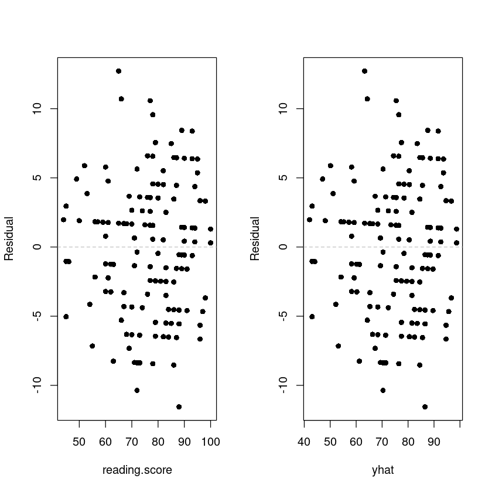

library(dplyr)
library(lmtest)Loading required package: zoo
Attaching package: ‘zoo’
The following objects are masked from ‘package:base’:
as.Date, as.Date.numeric
김보람
April 4, 2023
Loading required package: zoo
Attaching package: ‘zoo’
The following objects are masked from ‘package:base’:
as.Date, as.Date.numeric
| gender | race.ethnicity | parental.level.of.education | lunch | test.preparation.course | math.score | reading.score | writing.score | |
|---|---|---|---|---|---|---|---|---|
| <chr> | <chr> | <chr> | <chr> | <chr> | <int> | <int> | <int> | |
| 1 | female | group D | some college | standard | completed | 59 | 70 | 78 |
| 2 | male | group D | associate's degree | standard | none | 96 | 93 | 87 |
| 3 | female | group D | some college | free/reduced | none | 57 | 76 | 77 |
| 4 | male | group B | some college | free/reduced | none | 70 | 70 | 63 |
| 5 | female | group D | associate's degree | standard | none | 83 | 85 | 86 |
| 6 | male | group C | some high school | standard | none | 68 | 57 | 54 |
gender race.ethnicity parental.level.of.education
Length:1000 Length:1000 Length:1000
Class :character Class :character Class :character
Mode :character Mode :character Mode :character
lunch test.preparation.course math.score reading.score
Length:1000 Length:1000 Min. : 15.00 Min. : 25.00
Class :character Class :character 1st Qu.: 58.00 1st Qu.: 61.00
Mode :character Mode :character Median : 68.00 Median : 70.50
Mean : 67.81 Mean : 70.38
3rd Qu.: 79.25 3rd Qu.: 80.00
Max. :100.00 Max. :100.00
writing.score
Min. : 15.00
1st Qu.: 59.00
Median : 70.00
Mean : 69.14
3rd Qu.: 80.00
Max. :100.00 | gender | race.ethnicity | parental.level.of.education | lunch | test.preparation.course | math.score | reading.score | writing.score | |
|---|---|---|---|---|---|---|---|---|
| <chr> | <chr> | <chr> | <chr> | <chr> | <int> | <int> | <int> | |
| 1 | female | group E | associate's degree | standard | none | 82 | 83 | 80 |
| 2 | male | group E | master's degree | free/reduced | none | 56 | 46 | 43 |
| 3 | female | group E | associate's degree | free/reduced | none | 80 | 82 | 85 |
| 4 | male | group E | associate's degree | standard | none | 89 | 88 | 86 |
| 5 | female | group E | associate's degree | standard | none | 80 | 79 | 71 |
| 6 | female | group E | some college | free/reduced | none | 69 | 74 | 75 |
group E의 아래 두 데이터 상관관계를 보고자 함
Reading score: The student’s score on a standardized reading test
Writing score: The student’s score on a standardized writing test
dt <- data.frame(
i = 1:nrow(data),
x = data$reading.score,
y = data$writing.score,
x_barx = data$reading.score - mean(data$reading.score),
y_bary = data$writing.score - mean(data$writing.score))
head(dt)| i | x | y | x_barx | y_bary | |
|---|---|---|---|---|---|
| <int> | <int> | <int> | <dbl> | <dbl> | |
| 1 | 1 | 83 | 80 | 6.384615 | 4.96503497 |
| 2 | 2 | 46 | 43 | -30.615385 | -32.03496503 |
| 3 | 3 | 82 | 85 | 5.384615 | 9.96503497 |
| 4 | 4 | 88 | 86 | 11.384615 | 10.96503497 |
| 5 | 5 | 79 | 71 | 2.384615 | -4.03496503 |
| 6 | 6 | 74 | 75 | -2.615385 | -0.03496503 |
dt$x_barx2 <- dt$x_barx^2
dt$y_bary2 <- dt$y_bary^2
dt$x_barxy_bary <-dt$x_barx * dt$y_bary
head(dt)| i | x | y | x_barx | y_bary | x_barx2 | y_bary2 | x_barxy_bary | |
|---|---|---|---|---|---|---|---|---|
| <int> | <int> | <int> | <dbl> | <dbl> | <dbl> | <dbl> | <dbl> | |
| 1 | 1 | 83 | 80 | 6.384615 | 4.96503497 | 40.763314 | 2.465157e+01 | 31.69983862 |
| 2 | 2 | 46 | 43 | -30.615385 | -32.03496503 | 937.301775 | 1.026239e+03 | 980.76277569 |
| 3 | 3 | 82 | 85 | 5.384615 | 9.96503497 | 28.994083 | 9.930192e+01 | 53.65788058 |
| 4 | 4 | 88 | 86 | 11.384615 | 10.96503497 | 129.609467 | 1.202320e+02 | 124.83270576 |
| 5 | 5 | 79 | 71 | 2.384615 | -4.03496503 | 5.686391 | 1.628094e+01 | -9.62183970 |
| 6 | 6 | 74 | 75 | -2.615385 | -0.03496503 | 6.840237 | 1.222554e-03 | 0.09144701 |
Call:
lm(formula = y ~ x, data = dt)
Coefficients:
(Intercept) x
-2.506 1.012 \(\widehat y =-2.506 + 1.012 x\)
Call:
lm(formula = y ~ x, data = dt)
Residuals:
Min 1Q Median 3Q Max
-11.5572 -3.4544 0.3703 3.3341 12.7208
Coefficients:
Estimate Std. Error t value Pr(>|t|)
(Intercept) -2.5063 2.2880 -1.095 0.275
x 1.0121 0.0294 34.419 <2e-16 ***
---
Signif. codes: 0 ‘***’ 0.001 ‘**’ 0.01 ‘*’ 0.05 ‘.’ 0.1 ‘ ’ 1
Residual standard error: 4.778 on 141 degrees of freedom
Multiple R-squared: 0.8936, Adjusted R-squared: 0.8929
F-statistic: 1185 on 1 and 141 DF, p-value: < 2.2e-16| Df | Sum Sq | Mean Sq | F value | Pr(>F) | |
|---|---|---|---|---|---|
| <int> | <dbl> | <dbl> | <dbl> | <dbl> | |
| x | 1 | 27045.856 | 27045.85588 | 1184.685 | 1.731866e-70 |
| Residuals | 141 | 3218.969 | 22.82957 | NA | NA |
\(β_0, β_1\)에 대한 개별 회귀계수의 유의성검정을 수행하시오.
가설 \(H_0: \beta_1 = 0\) vs \(H_1: not H_0\)
| Estimate | Std. Error | t value | Pr(>|t|) | |
|---|---|---|---|---|
| (Intercept) | -2.506277 | 2.2880027 | -1.09540 | 2.752092e-01 |
| x | 1.012084 | 0.0294046 | 34.41926 | 1.731866e-70 |
\(\beta_0\)의 t-value= -1.09540 < 1.97693148863425 이므로 귀무가설을 기각할 수 없다.
reading score가 61.2 인 학생의 평균 wiring score 예측하고, 95% 신뢰구간을 구하시오.
- 코드
reading score가 61.2 인 학생의 개별 wiring score 예측하고, 95% 신뢰구간을 구하시오.
par(mfrow=c(1,2))
plot(resid ~ reading.score, data, pch=16, ylab = 'Residual')
abline(h=0, lty=2, col='grey')
plot(resid ~ yhat, data, pch=16, ylab = 'Residual')
abline(h=0, lty=2, col='grey')
Shapiro-Wilk normality test
data: resid(model_)
W = 0.9925, p-value = 0.6551\(H_0\): 정규성 만족, \(H_1\): 정규성만족X
p-value의 값이 0.05 보다 크므로 귀무가설 채택. 즉 정규성 가정을 만족한다.
Durbin-Watson test
data: model_
DW = 2.1808, p-value = 0.275
alternative hypothesis: true autocorrelation is not 0p-value값이 0.275로 0.05보다 크므로 독립성을 먼족한다.